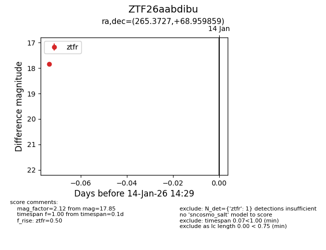
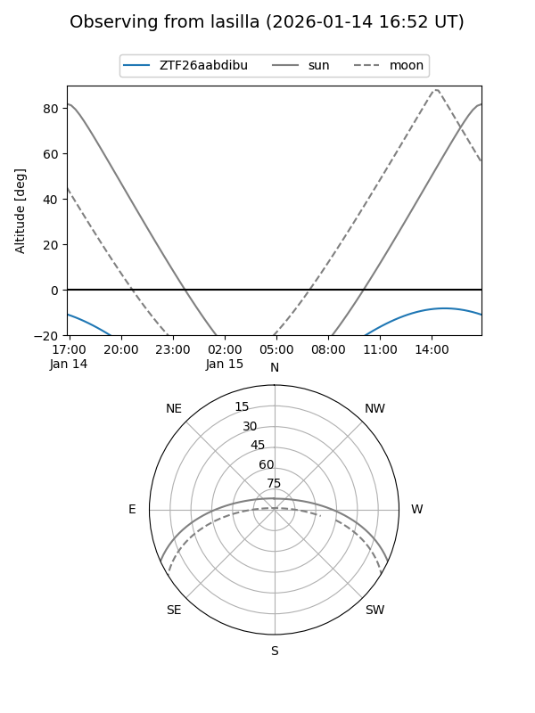
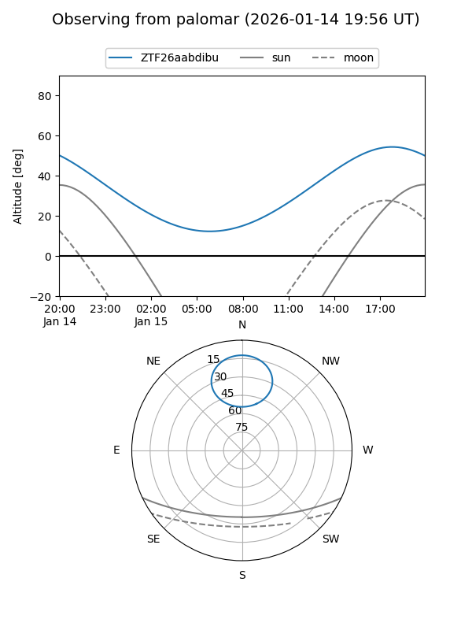

ZTF26aabdibu
Target ZTF26aabdibu at 2026-01-14 14:30
Aliases and brokers:
FINK: link
Lasair: link
ALeRCE: link
alt names
ZTF26aabdibu (ztf,fink_ztf)
Coordinates:
equatorial (ra, dec) = 265.3727,+68.95986
equatorial (HMS+DMS) = 17:41:29.46,+68:57:35.49
galactic (l, b) = (99.2692,+31.43933)
Flags:
Photometry:
last ztfr=17.85
1 ztfr detections
Lightcurve

Visibility


Additional plots